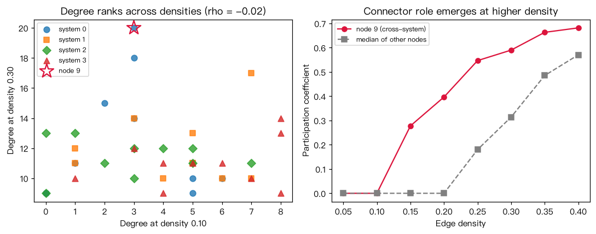

Example03 / 10
枢纽排序对阈值的依赖——度与参与系数
已知系统标签时，参与系数 P_i = 1 - Σ_s (k_is / k_i)^2，k_is 为节点 i 连到系统 s 的边数。 分别在密度 0.10 与 0.30 下列出度最高的 5 个脑区，并查看脑区 9（跨系统枢纽）的参与系数排名。 输出解读：密度 0.10 时度最高的是系统内载荷大的“省内”脑区，所有边都在系统内， 脑区 9 的跨系统边尚未进入网络，P[9] = 0；密度 0.30 时它的度和参与系数都位居前列； 两种密度下度排序的 Spearman 相关很低。真实数据中模块标签本身也是估计出来的， 因此枢纽结论应在多个密度、多个图谱下检查稳定性。
Output输出图

Output文字输出
密度 0.10：度最高的 5 个脑区 = [36, 34, 32, 39, 15]，度 = [8, 8, 8, 7, 7] 脑区 9 的参与系数 = 0.00，在 40 个脑区中排第 1（并列计同名次）；参与系数 > 0 的脑区共 0 个 密度 0.30：度最高的 5 个脑区 = [9, 2, 16, 6, 34]，度 = [20, 18, 17, 15, 14] 脑区 9 的参与系数 = 0.59，在 40 个脑区中排第 2（并列计同名次）；参与系数 > 0 的脑区共 36 个 两种密度下度排序的 Spearman 相关 = -0.022
Code代码
# 已知系统标签时，参与系数 P_i = 1 - Σ_s (k_is / k_i)^2，k_is 为节点 i 连到系统 s 的边数。
# 分别在密度 0.10 与 0.30 下列出度最高的 5 个脑区，并查看脑区 9（跨系统枢纽）的参与系数排名。
# 输出解读：密度 0.10 时度最高的是系统内载荷大的“省内”脑区，所有边都在系统内，
# 脑区 9 的跨系统边尚未进入网络，P[9] = 0；密度 0.30 时它的度和参与系数都位居前列；
# 两种密度下度排序的 Spearman 相关很低。真实数据中模块标签本身也是估计出来的，
# 因此枢纽结论应在多个密度、多个图谱下检查稳定性。
import numpy as np
import networkx as nx
from scipy.stats import spearmanr
def simulate_bold(n_mod=4, per=10, T=200, seed=0):
rng = np.random.default_rng(seed) # 模拟数据，仅用于演示方法
labels = np.repeat(np.arange(n_mod), per)
sys_sig = rng.standard_normal((n_mod, T))
glob = rng.standard_normal(T)
load = rng.uniform(0.4, 1.0, size=n_mod * per)
X = load[:, None] * sys_sig[labels] + 0.3 * glob + rng.standard_normal((n_mod * per, T))
X[9] += 0.8 * sys_sig[1]
return X, labels
def proportional_threshold(R, density):
N = R.shape[0]
iu = np.triu_indices(N, k=1)
w = np.abs(R[iu])
m = int(round(density * len(w)))
keep = np.argsort(w)[::-1][:m]
G = nx.Graph()
G.add_nodes_from(range(N))
G.add_edges_from(zip(iu[0][keep], iu[1][keep]))
return G
def participation(G, labels):
"""参与系数；度为 0 的节点记为 0。"""
n_mod = labels.max() + 1
P = np.zeros(G.number_of_nodes())
for i in G.nodes():
k = G.degree(i)
if k == 0:
continue
kis = np.bincount([labels[j] for j in G.neighbors(i)], minlength=n_mod)
P[i] = 1 - np.sum((kis / k) ** 2)
return P
X, labels = simulate_bold()
R = np.corrcoef(X)
for d in [0.10, 0.30]:
G = proportional_threshold(R, d)
deg = np.array([G.degree(i) for i in G.nodes()])
top = np.argsort(deg)[::-1][:5]
P = participation(G, labels)
rank9 = int((P > P[9]).sum()) + 1
print(f"密度 {d:.2f}：度最高的 5 个脑区 = {top.tolist()}，度 = {deg[top].tolist()}")
print(f" 脑区 9 的参与系数 = {P[9]:.2f}，在 40 个脑区中排第 {rank9}（并列计同名次）；"
f"参与系数 > 0 的脑区共 {int((P > 0).sum())} 个")
deg10 = [d for _, d in proportional_threshold(R, 0.10).degree()]
deg30 = [d for _, d in proportional_threshold(R, 0.30).degree()]
rho, _ = spearmanr(deg10, deg30)
print("两种密度下度排序的 Spearman 相关 =", round(rho, 3))
import matplotlib.pyplot as plt
dens = np.linspace(0.05, 0.40, 8)
P9, Poth = [], []
for d in dens:
Pd = participation(proportional_threshold(R, d), labels)
P9.append(Pd[9]); Poth.append(np.median(np.delete(Pd, 9)))
deg10, deg30 = np.array(deg10), np.array(deg30)
fig, axes = plt.subplots(1, 2, figsize=(10, 4))
for m, mk in zip(range(4), "osD^"):
idx = labels == m
axes[0].scatter(deg10[idx], deg30[idx], marker=mk, s=50, alpha=0.8, label=f"system {m}")
axes[0].scatter(deg10[9], deg30[9], marker="*", s=300, facecolor="none", edgecolor="crimson", lw=1.5, label="node 9")
axes[0].set(xlabel="Degree at density 0.10", ylabel="Degree at density 0.30",
title=f"Degree ranks across densities (rho = {rho:.2f})")
axes[0].legend(fontsize=8)
axes[1].plot(dens, P9, "o-", color="crimson", label="node 9 (cross-system)")
axes[1].plot(dens, Poth, "s--", color="gray", label="median of other nodes")
axes[1].set(xlabel="Edge density", ylabel="Participation coefficient", title="Connector role emerges at higher density")
axes[1].legend(fontsize=8)
plt.tight_layout(); plt.show()Run在浏览器中运行
首次加载 Python 环境约需 20–40 秒；可以修改参数后重新运行。